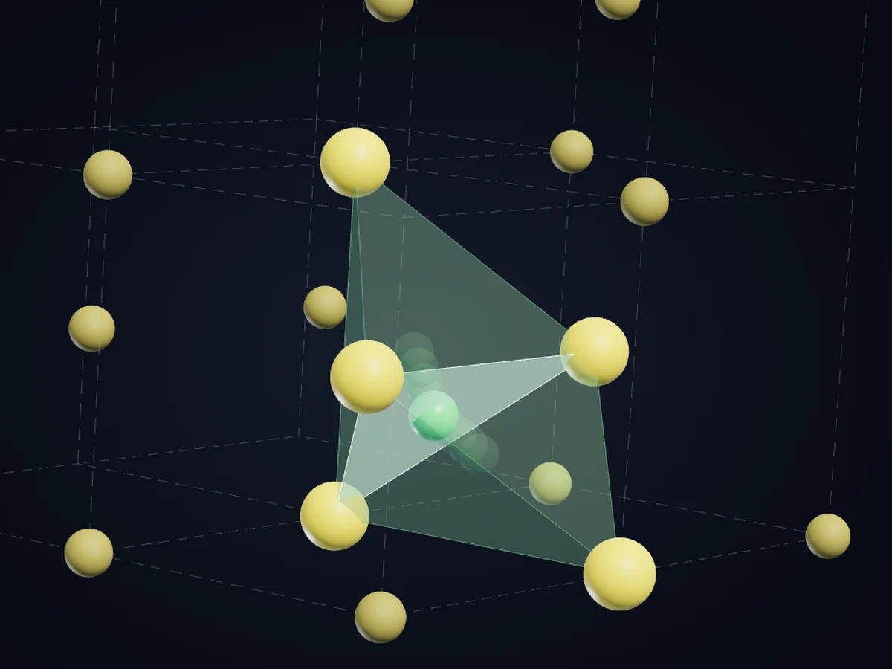
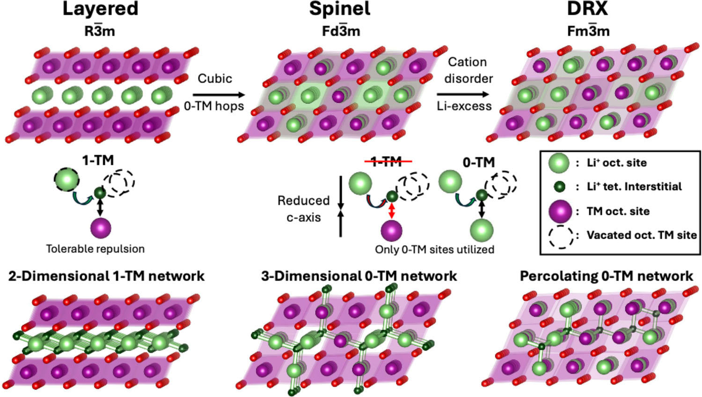

PAPER COMPANION · CRYSTAL DESIGN
Why some crystals
let lithium fly
See how the way sulfur packs decides whether lithium glides or has to squeeze.
Explore the visualizationINTERACTIVE MATERIALS SCIENCE
Interactive visualizations and animations across materials science.
Browse the visualizations
Figure 1 · Hau et al., Adv. Mater. 2025
Figure 1 maps lithium pathways in three structures
The slider scrubs the whole sequence. The first part focuses the paper figure and lifts its 1-TM glyph into three dimensions. The last part moves lithium from its octahedral site, through the tetrahedral site, into a vacant octahedral site. The pathway is schematic and the timing is illustrative.
The paper figure becomes an idealized three-dimensional lithium-ion hop. Once the model has formed, drag or use the arrow keys to rotate it, and Home to reset. The Li⁺, O, TM and Empty site buttons highlight each part of the model.
IN THE COLLECTION · ENERGY
One reaction. Two paths.
Follow the charge, then go inside graphite.
THE IDEA BEHIND FIG.3D
A growing library of interactive scientific visualizations and animations. Find a question, explore a mechanism, and see how materials behave.
The first entries explore batteries. The collection will grow across materials science—from structure and properties to transport and change.
Each visualization keeps its sources, assumptions and checks close by. Planned entries have not completed their release checks.
Human expert review is optional, not a release requirement. AI agreement does not establish empirical validation or peer review.